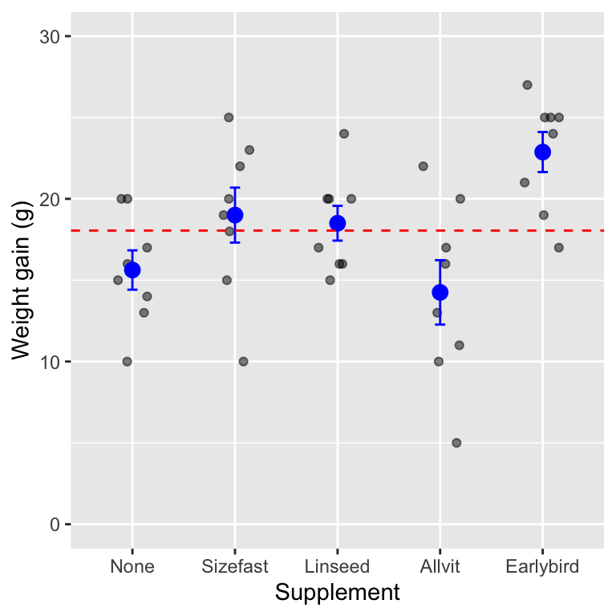
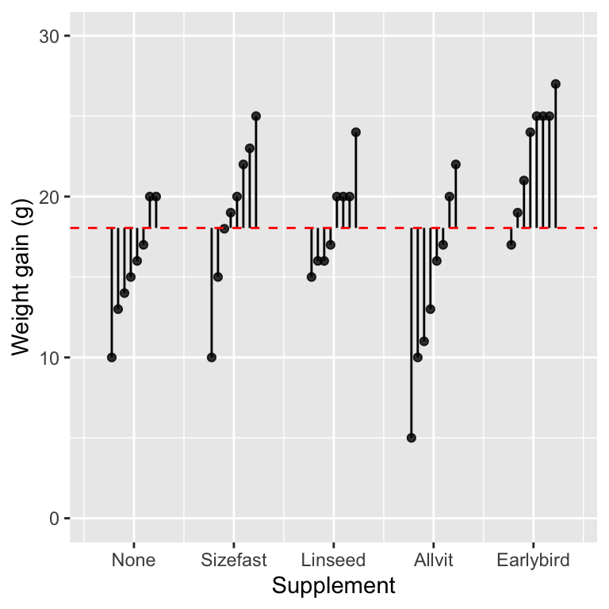
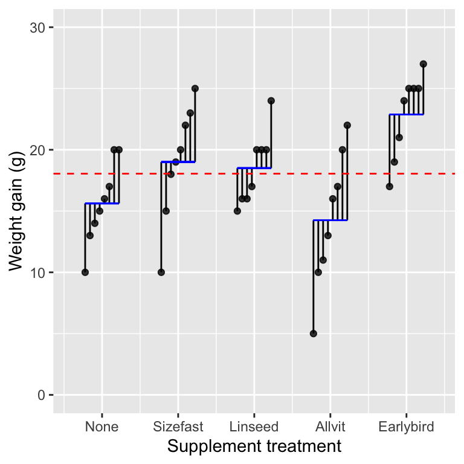
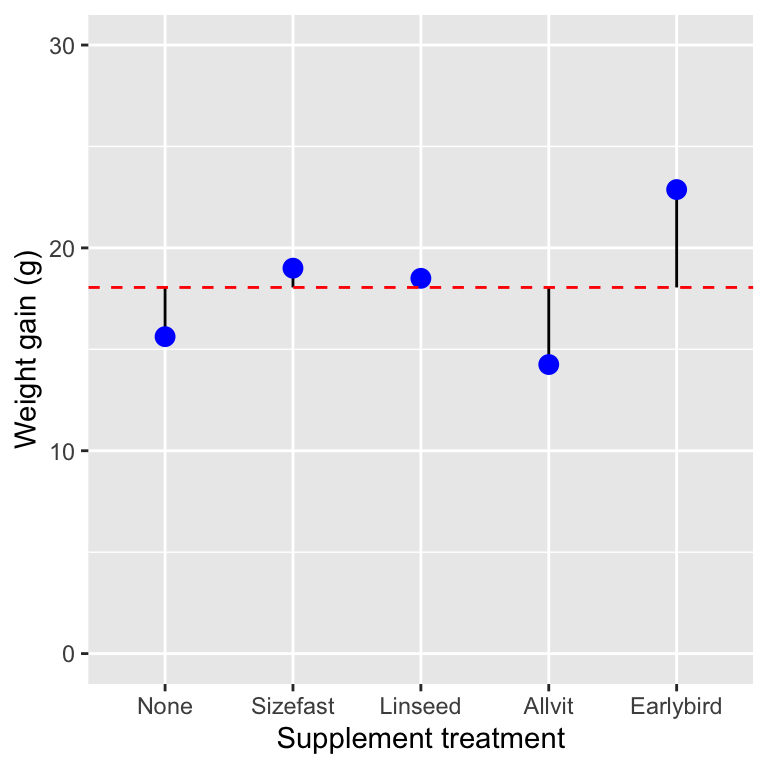

Chapter 14 Introduction to one-way ANOVA
14.1 Introduction
A two-sample t-test evaluates whether the mean of a numeric variable changes among two groups. The obvious question is, what happens if we need to compare differences among the means of such a variable measured in more than two groups? It may be tempting to test every pair of means using a two-sample t-test. However, this procedure is statistically flawed. In this chapter, we will introduce a new method to assess the statistical significance of differences among several means simultaneously. This is called Analysis of Variance (abbreviated to ANOVA).
ANOVA is one of those statistical terms that unfortunately has two slightly different usages:
- In its most general sense, ANOVA refers to a methodology for evaluating statistical significance. It often pops up when working with a statistical model known as the ‘general linear model.’ Simple linear regression is one special case of the general linear model10.
- In its more narrow sense, the term ANOVA is used to describe a particular type of statistical model. When used like this, ANOVA refers to a class of model used to compare means among two or more groups. The ANOVA-as-a-model is the focus of this chapter.
ANOVA models underpin the analysis of many different kinds of experimental data—they are one of the main ‘work horses’ of data analysis. As with many statistical models, we can use ANOVA without really understanding the details of how it works. However, when interpreting the results of statistical tests associated with ANOVA, it is helpful to have a basic conceptual understanding of how it works. The goal of this chapter is to provide this basic understanding.
We’ll do this by exploring the simplest type of ANOVA model: One-way Analysis of Variance. One-way Analysis of Variance allows us to predict how the mean value of a numeric variable (the response variable) responds or depends on the values of a categorical variable (the predictor variable). This statement is just another way of way of saying that the ANOVA model compares means among groups defined by the categorical variable.
It is no coincidence that this sounds a lot like our description of simple regression. ANOVA and regression are both special cases of the general linear model. This observation explains why:
- regression and ANOVA can be described with a common language (e.g. response vs predictor variables), and
- the workflows for developing ANOVA and regression analyses are actually very similar in terms of what we have to do in R.
14.2 Why do we need ANOVA models?
The corncrake, Crex crex, underwent severe declines in the UK thought to be due to changes in farming practices. Captive breeding and reintroduction programmes were introduced to try to help supplement the wild population. The scientists in charge of the breeding programme wanted to determine the success of 4 different supplements (the predictor variable) for increasing initial growth (the response variable) in the captive-bred hatchlings. They conducted an experiment in which groups of 8 hatchlings were fed with different supplements. A fifth group of 8 hatchlings served as the control group—they were given the base diet with no supplements. At the end of the experiment, they measured how much weight each hatchling had gained over the week.
We can plot the weight gain of 8 hatchlings on each of the supplements (this is the raw data), along with the means of each supplement group, the standard error of the mean, and the sample mean of all the data (the ‘global’ mean):

The grey points are the raw data, the means and standard error of each group are in blue, and the overall sample mean is shown by the dashed red line. We can see that there seem to be differences among the means: hatchlings in each of the different groups often deviate quite a lot from the global mean (the dashed line). This would seem likely to be an effect of the supplements they are on. At the same time, there is still a lot of variation within each group: not all of the hatchlings on the same supplements have the same weight gain.
Perhaps all of this could be explained away as sampling variation—that is, the supplements make no difference at all to weight gain and all we’re observing are chance variations. We need a statistical test (or tests) to decide whether these differences are ‘real.’
It might be tempting to use t-tests to compare each mean value with every other mean. This would involve ten t-tests on all possible comparisons of the 5 different supplements. Remember, if there is no effect of supplement, then each time we do a t-test, there is a chance that we will get a false significant result. Using the conventional p = 0.05 significance level, there is a 1 in 20 chance of getting such ‘false positives.’ However, doing several such tests increases the overall risk of finding at least one false positive. In fact, doing ten t-tests gives about a 40% chance of at least one test giving a false positive, even though the individual tests are conducted with p = 0.05.
That doesn’t sound like a very good way to do science. We need a reliable way to determine whether several means are different or not without increasing the chance of getting a spurious result. That’s the job of Analysis of Variance (ANOVA). Just as a two-sample t-test compares means between two groups, ANOVA compares means among two or more groups. Its name raises an obvious question: if the job of an ANOVA model is to compares means, why is it called Analysis of Variance? Let’s find out…
14.3 How does ANOVA work?
The key to understanding ANOVA is to realise that it works by quantifying and comparing different sources of variation in the data. We start with the total variation in the response variable—the variation among all the units in the study—and then partition this into two sources:
Variation attributed to the different groups in the data (e.g. the supplement groups). This is called the ‘between-group’ variation and is equivalent to the ‘explained variation’ described in the regression chapter. It quantifies the variation that is ‘explained’ by the different means. This is the source of variation we usually care about. If this is very low, it means group membership doesn’t explain much variation.
Variation due to other, unmeasured sources. This second source of variation is usually referred to as the ‘within-group’ variation because it applies to experimental units within each group. This quantifies the variation due to everything else that isn’t accounted for by the treatments. Within-group variation is also called the ‘error variation.’ We’ll mostly use this latter term because it is a bit more general.
ANOVA does compare means, but it does this by looking at changes in variation. That might seem odd, but it works. If the amount of variation among treatments is sufficiently large compared to the within-group variation, this suggests that the treatments are probably having an effect. This means that to understand ANOVA, we have to keep three sources of variation in mind: the total variation, the between-group variation, and the error variation.
We’ll get a sense of how this works by carrying on with the corncrake example. We’ll look at how to quantify the different sources of variation, and then move on to evaluate statistical significance using these quantities. The thing to keep in mind is that the logic of these calculations is no different from that used to carry out a regression analysis. The only real difference is that we fit means to different groups when working with an ANOVA model instead of fitting a line through the data. Regression and ANOVA both aim to partition (i.e. split up) the variation in a numeric variable into the parts we can explain and an unexplained leftover part.
Total variation
The figure below shows the weight gain of each hatchling in the study and the grand mean (i.e. we have not plotted the group-specific means).

The vertical lines show the distance between each observation and the grand mean—we have ordered the data within each group to make the plot a little tidier. A positive deviation occurs when a point is above the line, and a negative deviation corresponds to a case where the point is below the line. We’re not interested in the direction of these deviations. We need to quantify the variability of the deviations. This is a feature of their magnitude (i.e. the length of the lines).
What measure of variability should we use? We can’t add up the deviations because they add to zero. Instead, we apply the same idea introduced in the Relationships and regression chapter: the measure of variability we need is based on the ‘sum of squares’ (abbreviated SS) of the deviations. A sum of squares is calculated by taking each deviation in turn, squaring it, and adding up the squared values. Here are the numeric values of the deviations shown graphically above:
## [1] -5.05 1.95 -1.05 -2.05 -3.05 -4.05 -8.05 1.95 -3.05 -0.05
## [11] -8.05 3.95 4.95 0.95 6.95 1.95 1.95 5.95 -1.05 -2.05
## [21] 1.95 1.95 -3.05 -2.05 3.95 -13.05 -8.05 -2.05 -7.05 -1.05
## [31] 1.95 -5.05 -1.05 6.95 5.95 6.95 6.95 0.95 8.95 2.95The sum of squares of these numbers is 967.9. This is called the total sum of squares, because this measure of variability completely ignores the information about treatment groups. It measures the total variability in the response variable, calculated relative to the grand mean.
Residual variation
The next component of variability we need relates to the within-group variation. Let’s replot the original figure showing the weight gain of each hatchling (points), the mean of each supplement group (horizontal blue lines), and the grand mean:

The vertical lines show something new this time. They display the distance between each observation and the group-specific means. They summarise the variation among hatchlings within treatment groups. Here are the numeric values of these deviations:
## [1] -9.250 -5.625 -9.000 -4.250 -3.250 -2.625 -1.250 -1.625 -0.625 -4.000
## [11] -3.500 0.375 -2.500 -2.500 1.750 1.375 -1.500 2.750 -5.875 -1.000
## [21] 0.000 -3.875 4.375 4.375 1.000 1.500 1.500 1.500 5.750 -1.875
## [31] 3.000 7.750 4.000 5.500 1.125 6.000 2.125 2.125 2.125 4.125These values are a type of residual: they quantify the ‘left over’ variation after accounting for differences due to treatment groups. Once again, we can summarise this variability as a single number by calculating the associated sum of squares: we take each deviation in turn, square it, and then add up the squared values. The sum of squares of these numbers is (610.25). This is called the residual sum of squares11. It is a measure of the variability that may be attributed to differences among individuals after controlling for the effect of different groups.
Between-group variation
The last component of variability we need relates to the between group variation. We’ll replot the figure one more time, but this time we’ll show just the group-specific means (blue points), the overall grand mean (dashed red line), and the deviations of each group mean from the grand mean:

Now the vertical lines show the distance between each group-specific mean and the grand mean. We have five different treatment groups, so there are only five lines. These lines show the variation due to differences among treatment groups. Here are the numeric values of these deviations:
## [1] -2.425 0.950 0.450 -3.800 4.825These values quantify the variation that can be attributed to differences among treatments. Once again, we can summarise this variability as a single number by calculating the associated sum of squares—this number is called the treatment sum of squares. This is the same as the ‘explained sum of squares’ discussed in the context of regression. It is a measure of the variability attributed to differences among treatments.
This is 44.71 in the corncrake example. Notice that this is much smaller than the total sum of squares and the residual sum of squares. This isn’t all that surprising as it is based on five numbers, whereas the other two measures of variability are based on all the observations.
14.3.1 Degrees of freedom
The raw sums of squares in ANOVA are a function of sample size and the number of groups. To be useful, we need to convert them into measures of variability that don’t scale with the size of a data set. We use degrees of freedom (written as df, or d.f.) to do this. We came across the concept of degrees of freedom when we studied regression: the degrees of freedom associated with a sum of squares quantifies how much ‘information’ it is based on. Each of the three sums of squares we just calculated has a different degrees of freedom calculation associated with it:
- Total d.f. = (Number of observations - 1)
- Treatment d.f. = (Number of treatment groups - 1)
- Error d.f. = (Number of observations - Number of treatment groups)
The way to think about these is as follows. We start out with a degrees of freedom equal to the total number of deviations associated with a sum of squares. We then ‘lose’ one degree of freedom for every mean we have to calculate to work out the deviations. Here is how this works in the corncrake example:
Total d.f. = 40 - 1 = 39 — The total sum of squares was calculated using all 40 observations in the data, and the deviations were calculated relative to 1 mean (the grand mean).
Treatment d.f. = 5 - 1 = 4 — The treatment sum of squares was calculated using the 5 treatment group means, and the deviations were calculated relative to 1 mean (the grand mean).
Error d.f. = 40 - 5 = 35 — The error sum of squares was calculated using all 40 observations in the data, and the deviations were calculated relative to 5 means (the treatment group means).
Don’t worry too much if that seems confusing. We generally don’t have to carry out degrees of freedom calculations by hand because R will do them for us. We have reviewed them because knowing where they come from can help understand the output of an ANOVA significance test.
14.3.2 Mean squares, variance ratios, and F-tests
Once we know how to calculate the degrees of freedom, we can use them to standardise each of the sums of squares. The calculations are very simple. We take each sum of squares and divide it by its associated degrees of freedom. The resulting quantity is called a mean square (abbreviated as MS): \[ \text{Mean square} = \frac{\text{Sum of squares}}{\text{Degrees of freedom}} \] We stated what a mean square represents when discussing regression: it is an estimate of a variance. The mean squares from an ANOVA quantify the variability of the whole sample (total MS), the variability explained by treatment group (treatment MS), and the unexplained residual variation (residual MS).
ANOVA quantifies the strength of the treatment effect by comparing the treatment mean square to the residual mean square. When the treatment MS is large relative to the residual MS, this suggests that the treatments are more likely to be having an effect. In practise, they are compared by calculating the ratio between them (designated by the letter F):
\[F = \mbox{Variance ratio} = \frac{\mbox{Variance due to treatments}}{\mbox{Error variance}}\]
This is the equivalent to the F-ratio mentioned in the context of regression. When the variation among treatment means (treatment MS) is large compared to the variation due to other factors (residual MS), the F-ratio will be large. If the variation among treatment means is small relative to the residual variation, the F-ratio will be small.
How do we decide when the F-ratio is large enough? That is, how do we judge a result to be statistically significant? We play out the usual ‘gambit’:
We assume that there is no difference between the population means of each treatment group. That is, we hypothesise that the data in each group were sampled from a single population with one overall global mean.
Next, we use information in the sample to help us work out what would happen if we were to repeatedly take samples in this hypothetical situation. The ‘information’ in this case corresponds to the mean squares.
We then ask, ‘if there is no difference between the groups, what is the probability that we would observe a variance ratio that is the same as, or more extreme than, the one we observed in the real sample?’
If the observed variance ratio is sufficiently improbable, then we conclude that we have found a ‘statistically significant’ result, i.e. one that is inconsistent with the hypothesis of no difference.
In order to work through these calculations, we make one key assumption about the population from which the data in each treatment group has been sampled. We assume that the residuals are normally distributed. Once we make this assumption the distribution of the F-ratio under the null hypothesis (the ‘null distribution’) has a particular form: it follows an F distribution. This means we assess the statistical significance of differences between means by comparing the F-ratio calculated from a sample of data to the theoretical F distribution.
This procedure is “methodology for evaluating statistical significance” we alluded to at the start of this chapter. The resulting F-test is no different from the significance testing methodology we outlined for regression models. The important point is that this procedure uses only one comparison—the treatment variation and the error variation—rather than the ten individual t-tests that would have been required to compare all the pairs.
One thing to be aware of is that the F-tests are typically global tests of significance: they indicate whether groups are different but don’t tell us anything about which groups might be driving a significant result. That kind of question needs another test. We will examine one such test in the multiple comparison chapter later.
14.4 Different kinds of ANOVA model
There are many different flavours of ANOVA model. The one we’ve just been learning about is called a one-way ANOVA. It’s called one-way ANOVA because it involves only one factor: supplement type (this includes the control). If we had considered two factors—e.g. supplement type and amount of food—we would have to use something called a two-way ANOVA. A design with three factors is called a three-way ANOVA, and… you get the idea.
There are many other ANOVA models, each of which is used to analyse a specific type of experimental design. We will only consider three different types of ANOVA in this book: one-way ANOVA, two-way ANOVA, and ANOVA for one-way, blocked design experiments.
14.5 Some common questions about ANOVA
To finish off with, three common questions that often arise:
14.5.1 Can ANOVA only be applied to experimental data?
We have been discussing ANOVA in the context of a designed experiment (i.e. we talked about treatments and control groups). Although ANOVA was developed to analyse experimental data, which is where it is most powerful, it can be used in an observational setting. As long as we’re careful about how we sample different groups, we can use ANOVA to analyse their differences. The main difference between ANOVA for experimental and observational studies arises in the interpretation of the results. If the data aren’t experimental, we can’t say anything concrete about the causal nature of observed among-group differences.
14.5.2 Do we need equal replication?
One of the frequent problems with biological data is we often don’t have equal replication. Even if we started with equal replication in our design, all sorts of things conspire to upset even the best-designed experiments. For example, plants and animals have a habit of dying before we have gathered all our data: a pot may get dropped or a culture contaminated. Does this matter? Not really. One-way ANOVA does not require equal replication and will work just fine where sample sizes differ between treatments.
14.5.3 Can ANOVA be done with only two treatments?
Although the t-test provides a convenient way of testing means from two treatments, nothing stops you from doing an ANOVA on two treatments. A t-test (assuming equal variances) and ANOVA on the same data should give the same p-value (in fact, the F-statistic from the ANOVA will be the square of the t-value from the t-test). However, one advantage to the t-test is that you can do the version of the test that allows for unequal variances—something a standard ANOVA does not do. There is a version of Welch’s test for one-way ANOVA, but we won’t study it in this book (look at the oneway.test function if you are interested).